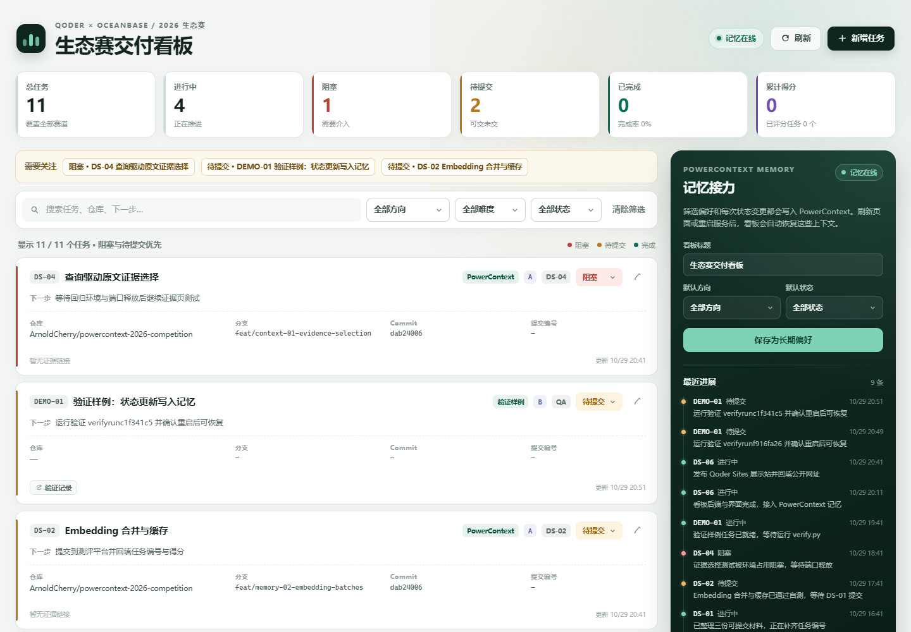
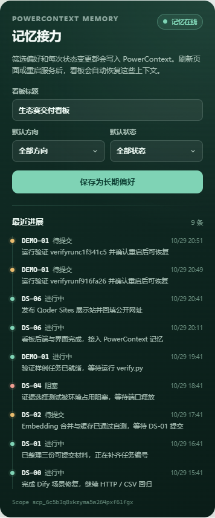

提交信息散落
分支、commit、平台编号、得分和截图链接分散在聊天与报告里。回填时才发现少了一项。
2026 OCEANBASE 生态赛 · QODER 赛道
接力板是面向多任务并行交付的本地看板。任务、分支、commit、平台编号、得分和证据集中在同一个工作面； 单命令启动时，应用会自动拉起真实 PowerContext 并记住偏好与进展，刷新或重启后仍能接着做。
单命令启动 · 自动管理真实 PowerContext · 无需模型 API

DS-06进行中
发布 Qoder Sites 展示站并回填公开网址
01 / 问题
分支、commit、平台编号、得分和截图链接分散在聊天与报告里。回填时才发现少了一项。
哪个任务阻塞、哪个已经可交，没有一张全局视图。风险任务不会自己浮到最上面。
换一个 Agent 或隔一天回来，要从头翻对话才能知道做到哪、下一步是什么。
“代码推了，但没提交；提交了，但证据找不到。” —— 看板要消灭的状态
02 / 工作流
从“做了什么”到“下一步做什么”，信息不再停留在某一次对话里。
每张卡片承载仓库、分支、commit、提交编号、得分与证据链接。阻塞和待提交自动排在前面。
切换状态、补证据或回填提交信息时，向 PowerContext 写入一条带任务与时间的进展。
偏好初始化标题与筛选，最近的进展回到时间线。接手者从当前进度继续，而不是从零开始。
03 / 能力
阻塞、待提交、进行中、待开始、已提交、已评分，按需要处理的顺序排列。
仓库、分支、commit、提交网址、平台任务编号、得分和证据链接，一个任务一次填全。
按方向、难度、状态过滤，按任务、仓库和下一步搜索，视图始终围绕当前关注点。
看板标题、默认方向与状态保存到 PowerContext，下次打开自动回到上次的视图。
每次状态变更留下任务、状态、下一步和时间，右侧即可看到最近的交接轨迹。
种子数据、接口验证、重启恢复和浏览器交互都有脚本与证据文件，评审核对成本低。
04 / 技术结合
项目选用 PowerContext 1.2.0 的基础记忆能力：显式写入、FTS 检索，不需要模型 API。
应用启动时自动拉起受管理的真实服务，不依赖预先运行的 127.0.0.1:18801；
偏好与进展各走同一条读写链路，验证脚本可以按 run_id 精确命中。
/api/bootstrap 合并最新偏好到标题与筛选，并返回进展时间线。PATCH /api/tasks/{id} 或保存偏好时，调用 memory/remember。/api/memory/search 命中 run_id；服务重启后同一 Scope 仍可读取。
POST /v1/memory/remember
{
"scope_id": "scp_…",
"kind": "progress",
"text": "[progress] {\"task\":\"DS-06\",
\"status\":\"doing\",
\"next\":\"发布 Qoder Sites\"}"
}PowerContext 1.2.0 · SQLite + FTS · 应用自动管理
05 / 验证
真实运行、真实重启、真实浏览器。下面的数字和文件都可以在仓库中核对。
[PASS] PowerContext 由应用自动管理
[PASS] 启动无错误且自动播种完成
[PASS] 启动时从 PowerContext 读取偏好
[PASS] 偏好写入 / 重新加载后复用
[PASS] 状态变更写入 PowerContext
[PASS] 可按 run_id 检索进展记忆
[PASS] 刷新后任务与进展仍可见
--- 重启 PowerContext 与看板 ---
[PASS] 重启后任务状态与下一步仍在
[PASS] 重启后偏好仍可恢复
[PASS] 重启后仍由应用自动管理 PowerContext
[PASS] 重启后进展列表仍包含本次验证
16 + 8 项接口检查 · 0 项失败06 / 界面
所有截图来自本机真实运行；演示数据由应用首次启动自动初始化。
07 / 运行
依赖安装在本地，应用自动拉起真实 PowerContext（SQLite），无需另开终端、数据库服务或 API Key。
python -m board127.0.0.1:18800Windows 命令如下；Linux / macOS 将 .venv\Scripts\ 替换为 .venv/bin/。单命令启动，退出时应用会停止受管理的 PowerContext。
cd qoder
python -m venv .venv
.venv\Scripts\python -m pip install -r requirements.txt
# 单命令：自动启动看板 + 受管理的 PowerContext
.venv\Scripts\python -m board
# 打开 http://127.0.0.1:1880008 / QODER
从需求拆解、PowerContext 服务验证，到 FastAPI / SQLite 实现、Playwright 验证和 Qoder Sites 发布，
主要开发工作在本机会话 DS-06.md 中完成。